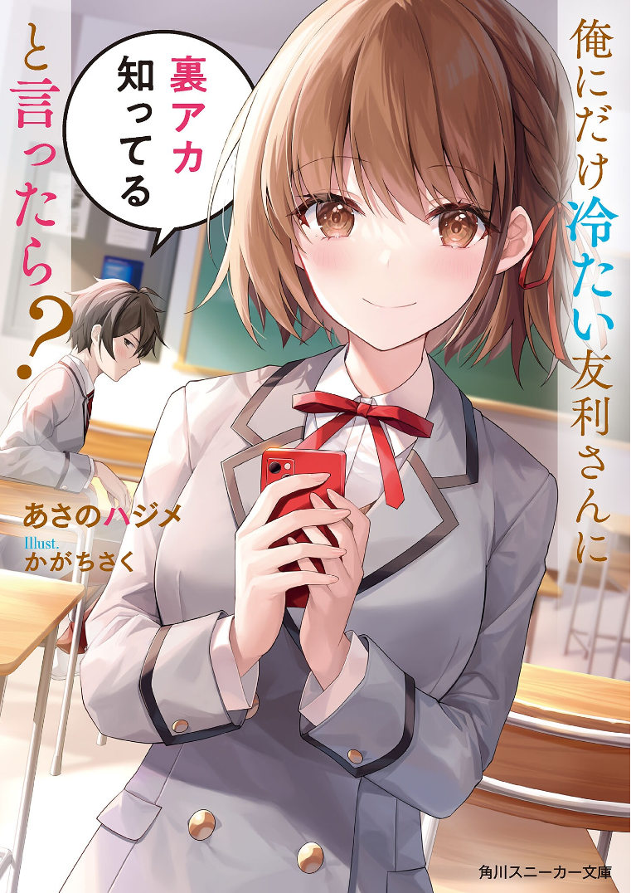

What If I Told Tomori-san, The Girl Who’s Cold Only Towards Me, That I Knew Her Secret Account
Novel Info's
Status: Ongoing
Genre: Comedy, Harem, Romance, Slice of Life
Author: Asano Hajime
Illustrator: かがちさく
Volumes: 2
Original Publisher:Kadokawa Sneaker Bunko
English Publisher: N/A
Fan Translation: Hiraethtl
Description/Sypnosis
―Azusa Tomori.
If there were a trend ranking at this school, her name would consistently be at the top.
Azusa Tomori, who sits next to me, is a model student, the class representative, and a good friend to everyone known as [Everyone’s friend].
――Well, except for me, Kimitaka Kagisaka
「No, I want to make you an example for everyone. Although your grades are excellent, I want to show everyone your bottom-of-the-barrel existence as a human being so that everyone can grow and――”
「Talkative b*tch.」
「!?… Aren’t you supposed to say ‘beautiful’?」
I had always thought that she unleashed her sharp tongue and picked fights with me for no reason―
《Ah, if it’s on my secret account, I can freely express how much I love you, K-kun.》
―But when I stumbled upon her secret account by chance, all she did was tweet affectionate posts toward me (?)
《I wonder what kind of expression you’d make if I told you?》
What kind of expression, you ask?
If you turn your head right now, you’ll know the answer…
Download Links
Epub & Pdf